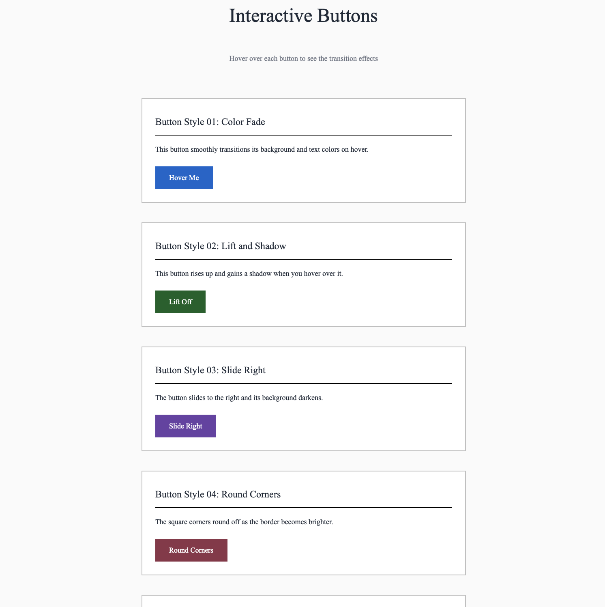
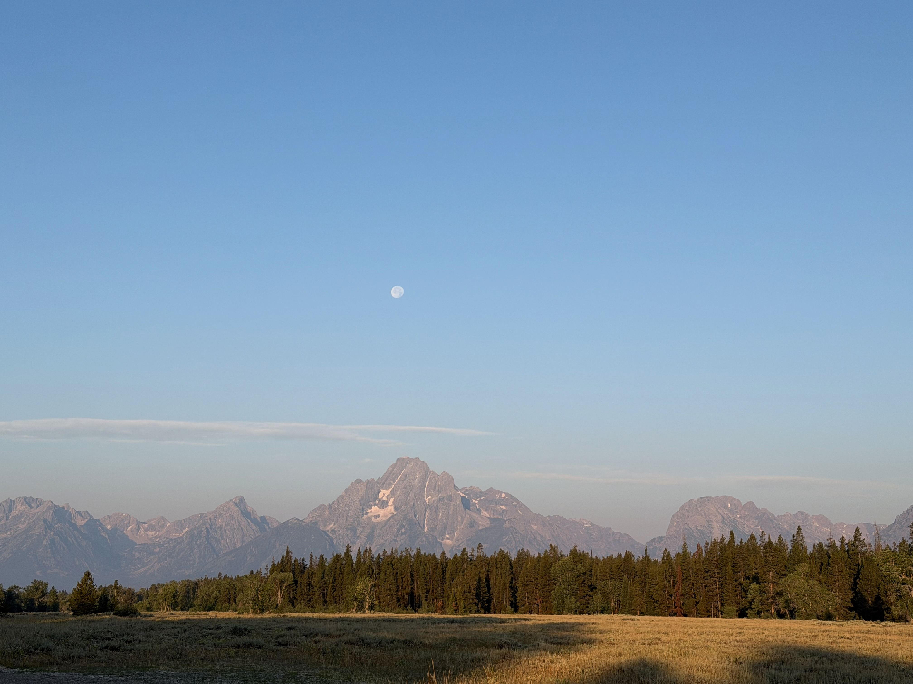

Interactive Buttons
This exercise helped me see how CSS transitions change the way a button feels. I tried effects that move a button, round its corners, add a glow, or spread out its letters.
As a Computing Applications student at Texas Tech University, I’m interested in how technology can make everyday tasks easier. I’m learning to plan web projects before writing code and build pages that are easy to read and navigate.
See my projects
This exercise helped me see how CSS transitions change the way a button feels. I tried effects that move a button, round its corners, add a glow, or spread out its letters.

This is an idea for a future project. I’d like a place to keep my favorite road-trip photos and write a short note about what made each stop memorable.